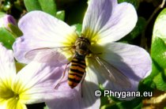
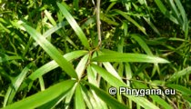

;
| Phrygana: la Nature entre le Kédros et la mer Libyenne (principalement), ailleurs aussi au gré des rencontres... |
;
|  |  | ||
| Episyrphus balteatus | Asparagus falcatus | enseignes |
| Espèces: 498 --- Faune: 223 -- Flora: 274 -- Galles: 1 | |||||
| Nouveautés | |||||
| Galle: | Pseudomonas savastanoi | Fauna: | Adela paludicolella | Flora: | Medicago scutellata |
| Flora | Cyperus laevigatus | Flora | Cyperus involucratus | Flora | Vicia cretica |
| Flora: | Smilax aspera | Fauna: | Aiolopus strepens | Flora: | Agave americana |
| 18 juin 2014 |
| Photographies © paul fontaine |
| No part of this work may be used for
commercial purposes without the written permission of the author. Aucune utilisation commerciale n'est possible sans l'autorisation écrite de l'auteur. |